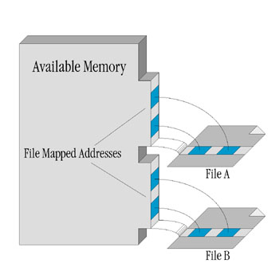

|
|
This Technical Note discusses the new file mapping APIs introduced in Mac OS 9.1. These APIs allow applications to take advantage of the virtual memory system to supplement the virtual memory address space available for their use. Using these new APIs, not only is it possible for an application to create and use its own private blocks of virtual memory, but it is also possible for an application to specify the data files that will be used by the virtual memory system as the backing store for the virtual memory it allocates.
All developers interested in taking advantage of the virtual memory system for supplementing the addressable memory available to their application or implementing memory mapped access to large collections of data stored on disk will want to read this Technical Note.
[Jan 25 2001]
|
Overview
File mapping allows an application to take advantage of the virtual memory system and supplement the memory space allocated for it with additional pageable memory. This mechanism works by implementing a direct one to one mapping between the range of file mapped memory addresses allocated for the application and the contents of a file on disk. Once a file mapped address range has been allocated for an application, the application can use that range of memory addresses as if it were any other block of memory.

Terminology used in this document makes a distinction between the contents of the file on disk and the virtual contents of the file in memory. A file that has been opened for use with these APIs is referred to as a mapped file, and the particular fork that is being used for file mapping is referred to as the mapped file fork. The address range in memory allocated by the virtual memory system for your application's use is referred to as the mapped file view.
There is a one to one correspondence between the addresses within the mapped file view and offsets into the section of the mapped file fork used for file mapping purposes. Specifically, the lowest address in the mapped file view will correspond to the lowest offset into the mapped file fork and the highest address in the mapped file view will correspond to the highest offset into the mapped file fork.
An application is free to use as many file mappings as it requires. As well, file mappings can be allocated and deallocated on the fly during particular processing operations. For example, say a particular function in an application required access to a very large lookup table during execution, but that function wasn't called very often. In this case, the table could be stored in a file rather than in memory and the function could open a read-only memory mapped view to the file and then access elements in stored in the table in the file as if it were accessing a elements in an array stored in memory.
|
Availability
The gestaltFileMappingAttr Gestalt selector can be used to determine if the file mapping APIs are available. Your application can use this selector to test for the availability of the file mapping APIs as follows:
/* FileMappingAvailable returns true if the file mapping APIs
discussed in this document are available for your application
to use. */
Boolean FileMappingAvailable(void) {
long response;
if (Gestalt(gestaltFileMappingAttr, &response) != noErr)
response = 0;
return ((response & (1<<gestaltFileMappingPresent)) != 0);
}
|
The file mapping APIs are exported from InterfaceLib.
Back to top
Mapped File Forks
A file must be opened using OpenMappedFile before a mapped file view can be created. OpenMappedFile lets you to specify the file to be opened, the fork to be opened, and the MappingPrivileges to be used when opening the file fork. OpenMappedFile returns a BackingFileID that is used to identify the mapped file fork. OpenMappedFile fails if the file fork cannot be opened with the MappingPrivileges requested.
While the mapped file fork is open, all other access paths to the file fork are denied regardless of the MappingPrivileges requested. Mapped file forks cannot be accessed by way of the File Manager while the mapped file fork is open. Likewise, file forks opened by the File Manager cannot be opened as mapped file forks.
Two variants of OpenMappedFile, FSpOpenMappedFile and OpenMappedScratchFile, are provided. FSpOpenMappedFile allows applications to specify the file fork to be opened using a FSSpec instead of a FSRef. OpenMappedScratchFile attempts to create and open a scratch file for use as a mapped file fork on a specified volume. The data for a scratch file is only valid in an open mapped file view. When a mapped file view is created for a scratch file, data on disk is not paged into memory. When a mapped file view for a scratch file is unmapped, changes are not written from memory to disk.
A program can obtain information about an open mapped file fork using GetMappedFileInformation. A program can obtain a list of open mapped file forks using GetNextMappedFile. A program can change the size of an open mapped file fork using SetMappedFileSize.
When a program is finished using a mapped file fork, it must close the mapped file fork using CloseMappedFile. All mapped file views using the BackingFileID must be closed before closing the mapped file fork. CloseMappedFile deletes the scratch file after it is closed if the BackingFileID is for a scratch file.
Back to top
Mapped File Views
To access the data in a mapped file fork, a program must create a mapped file view by using MapFileView. MapFileView lets you to specify the mapped file fork, the offset into the mapped file fork where the mapped file view should start, the length of the mapped file view, the memory access level (FileViewAccess), the size of a excluded range of bytes (a guard zone) to place adjacent to each end of the mapped file view, the optional characteristics of the mapped file view (FileViewOptions), and the requested base address of the mapped file view. MapFileView returns the base address of the mapped file view, the length of the mapped file view, and a FileViewID that identifies the mapped file view.
A program can obtain the valid bits allowed in the FileViewAccess and FileViewOptions passed to MapFileView using GetFileViewAccessOptions. A program can obtain information about a mapped file view using GetFileViewInformation. A program can obtain the FileViewID for a specific address using GetFileViewFromAddress. A program can obtain a list of mapped file views using GetNextView. A program can change memory access level of a mapped file view using SetFileViewAccess. A program can change the backing base of a mapped file view using SetFileViewBackingBase.
When a program is finished using a mapped file view, it must close the mapped file view using UnmapFileView. Any modified memory in a mapped file view is written to the mapped file fork when the mapped file view is un-mapped unless the mapped file fork is a scratch file created with OpenMappedScratchFile.
Back to top
Process Ownership of File Mappings
When a mapped file fork is opened, the current process becomes the owning process for that mapped file fork and all of its mapped file views. The owning process is the only process that can change or un-map the mapped file views it owns, and change or close the mapped file forks it owns. When the owning process terminates, all mapped file views created by that process are unmapped, and all mapped file forks opened by a process are closed.
Process ownership may be overridden by specifying kNoProcessMappedFile in the MappingPrivileges when a mapped file fork is opened. Mapped file forks opened with the kNoProcessMappedFile privilege are not owned by any process.
|
IMPORTANT:
Programs using kNoProcessMappedFile must un-map mapped file views and close mapped file forks when they are no longer needed. Failing to do so is a programming error and will cause the system to run out of logical address space.
|
Back to top
File Mappings and System Shutdown
All mapped file views are unmapped and all mapped file forks are closed at the sdOnUnmount stage of the system shutdown process. This means that the only safe time to use code or data stored in file mapped files opened with the File Mapping programming interfaces is at or before the sdOnDrivers stage of the system shutdown process.
Back to top
Memory Page Size
The page size used by the file mapping APIs is the same as the page size used by the Virtual Memory Manager. This page size can be determined by using the gestaltLogicalPageSize Gestalt selector.
Back to top
File Mapping APIs
This section presents the new file mapping APIs together with comments describing their usage.
Back to top
BackingFileID
A BackingFileID is used to access a mapped file fork.
typedef struct OpaqueBackingFileID *BackingFileID;
|
Back to top
MappingPrivileges
A set of flags that describe what operations can be performed on a
mapped file fork.
typedef OptionBits MappingPrivileges;
enum {
kInvalidMappedPrivileges = 0x00000000,
kCanReadMappedFile = 0x00000001, /* mapped file fork
has read access */
kCanWriteMappedFile = 0x00000002, /* mapped file fork
has write access */
kNoProcessMappedFile = (long)0x80000000, /* mapped file fork
and views are not
tracked by process */
kValidMappingPrivilegesMask =
kCanReadMappedFile
+ kCanWriteMappedFile
+ kNoProcessMappedFile
};
|
- kCanReadMappedFile - Allow the file fork to be mapped such that the memory can be read (this is required).
- kCanWriteMappedFile - Allow the file fork to be mapped such that the memory can be written. If not set, then the memory can be mapped read-only.
- kNoProcessMappedFile - The mapped file fork and its mapped file views are not tracked by process ID.
Back to top
MappedFileAttributes
A set of flags returned by GetMappedFileInformation that describe the attributes of a mapped file fork.
typedef OptionBits MappedFileAttributes;
enum {
kIsMappedScratchFile = 0x00000001 /* mapped file fork
is scratch file */
};
|
- kIsMappedScratchFile - Set when the mapped file fork is a scratch file created with
OpenMappedScratchFile.
Back to top
kMappedFileInformationVersion1
The version number of the MappedFileInformation struct.
enum {
kMappedFileInformationVersion1 = 1 /* version 1 of
MappedFileInformation */
};
|
Back to top
MappedFileInformation
Receives the information supplied by GetMappedFileInformation. The current version of this struct is kMappedFileInformationVersion1.
- owningProcess - The
ProcessSerialNumber of the process that owns this mapped file fork.
- ref - A pointer to a
FSRef where the FSRef of the mapped file fork is returned, or NULL if the FSRef is not needed.
- forkName - A pointer to a
HFSUniStr255 where the fork name of the mapped file fork is returned, or NULL if the fork name is not needed.
- privileges - The
MappingPrivileges of the mapped file fork.
- currentSize - The size, in bytes, of the mapped file fork.
- attributes - The
MappedFileAttributes of the mapped file fork.
Back to top
FileViewAccess
Values of type FileViewAccess represent allowable access to the memory in a mapped file view.
Only three bits of FileViewAccess have been defined for use at the current time. All remaining bits are reserved by Apple for future use. For convenience, most a number of masks have been provided that can be used in conjunction with the binary-or operator ( | ) to produce desired FileViewAccess value. These masks are
defined as follows:
- kFileViewAccessReadMask - Memory in mapped file view can be read from.
- kFileViewAccessWriteMask - Memory in mapped file view can be written to.
- kFileViewAccessExecuteMask - Instruction execution from mapped file view is permitted (currently unsupported).
- kFileViewAccessExcluded - Absolutely no access is permitted. If any access occurs, then an exception will be generated (currently unsupported).
- kFileViewAccessReadOnly - Only read operations are permitted.
- kFileViewAccessReadWrite - All types of access are permitted, including reading, writing, and instruction execution.
|
Note:
All memory maintained by the Mac OS 9.1 Virtual Memory Manager is
executable. As discussed in the Implementation Notes for Mac OS 9.1 section, the only values defined for variables of type FileViewAccess are kFileViewAccessReadOnly or kFileViewAccessReadWrite. Any other FileViewAccess values used with the routines defined in this document will result in a paramErr.
|
Back to top
FileViewOptions
Values of type FileViewOptions specify desired characteristics of the mapped file view being created. At this time, only kNilOptions is supported.
typedef OptionBits FileViewOptions;
|
Possible values that are defined for FileViewOptions include:
- kNilOptions - no options.
Back to top
kMapEntireFork
Pass kMapEntireFork to MapFileView as the backingLength parameter to file map the entire contents of a file.
enum {
kMapEntireFork = (-1)
};
|
Back to top
FileViewID
A FileViewID is used to access a mapped file view.
typedef struct OpaqueFileViewID* FileViewID;
|
Back to top
kFileViewInformationVersion1
The version number of the FileViewInformation struct.
Back to top
FileViewInformation
Receives the information supplied by GetFileViewInformation. The current version of this struct is kFileViewInformationVersion1.
struct FileViewInformation {
ProcessSerialNumber owningProcess; /* owning process */
LogicalAddress viewBase; /* starting address of mapped file view */
ByteCount viewLength; /* length of the mapped file view */
BackingFileID backingFile; /* the mapped file fork */
UInt64 backingBase; /* offset into mapped file fork */
FileViewAccess access; /* the FileViewAccess */
ByteCount guardLength; /* size of the guard ranges */
FileViewOptions options; /* the FileViewOptions */
};
typedef struct FileViewInformation FileViewInformation;
|
- owningProcess - The
ProcessSerialNumber of the process that owns this mapped file view.
- viewBase - The starting address of mapped file view.
- viewLength - The length of the mapped file view.
- backingFile - The
BackingFileID of the mapped file fork.
- backingBase - The offset into mapped file fork.
- access - The
FileViewAccess.
- guardLength - The size of the guard ranges.
- options - The
FileViewOptions.
Back to top
OpenMappedFile
Opens a file fork with the privileges requested for use as backing storage.
- ref - The file to map.
- forkNameLength - The fork name length in Unicode characters.
- forkName - The fork name in Unicode (
NULL = data fork).
- privileges - The requested
MappingPrivileges.
- backingFile - Receives a
BackingFileID which you can use to access the mapped file fork.
- result - An operating system result code:
noErr, paramErr, vmMappingPrivilegesErr, or various File Manager and Memory Manager errors.
The OpenMappedFile function opens the fork specified by the forkNameLength and forkName parameters of the file specified by the ref parameter and returns a BackingFileID in the backingFile parameter. You can pass the BackingFileID to other routines which accept a BackingFileID as an input parameter.
The privileges parameter specifies what operations you want to perform on the mapped file fork. Programs can request either kCanReadMappedFile privileges, or both kCanReadMappedFile and kCanWriteMappedFile privileges. To disable Process Manager tracking of the mapped file fork and its mapped file views, you may also request kNoProcessMappedFile privileges.
Back to top
FSpOpenMappedFile
Opens a file fork with the privileges requested for use as backing storage.
- spec - The file to map.
- mapResFork - Fork to map: false = data fork; true = resource fork.
- privileges - The requested
MappingPrivileges.
- backingFile - Receives a
BackingFileID which you can use to access the mapped file fork.
- result - An operating system result code:
noErr, paramErr, vmMappingPrivilegesErr, or various File Manager and Memory Manager errors.
The FSpOpenMappedFile function opens the fork specified by the mapResFork parameter of the file specified by the spec parameter and returns a BackingFileID in the backingFile parameter. You can pass the BackingFileID to other routines which accept a BackingFileID as an input parameter.
The privileges parameter specifies what operations you want to perform on the mapped file fork. Programs can request either kCanReadMappedFile privileges, or both kCanReadMappedFile and kCanWriteMappedFile privileges. To disable Process Manager tracking of the mapped file fork and its mapped file views, you may also request kNoProcessMappedFile privileges.
Back to top
OpenMappedScratchFile
Creates and opens a scratch file with the privileges requested for use as backing storage.
- volume - The volume where scratch file should be created or
kFSInvalidVolumeRefNum to let the system choose the volume.
- fileSize - The size of the scratch file.
- privileges - The requested
MappingPrivileges.
- backingFile - Receives a
BackingFileID which you can use to access the mapped file fork.
- result - An operating system result code:
noErr, paramErr, vmMappingPrivilegesErr, or various File Manager and Memory Manager errors.
The OpenMappedScratchFile function creates a file with the size specified by the fileSize parameter on the volume specified by the volume parameter. If kFSInvalidVolumeRefNum is passed as the volume parameter, the system code will choose the location of the file. OpenMappedScratchFile then opens the file and returns a BackingFileID in the backingFile parameter. You can pass the BackingFileID to other routines which accept a BackingFileID as an input parameter.
The privileges parameter specifies what operations you want to perform on the mapped file fork. Programs can request either kCanReadMappedFile privileges, or both kCanReadMappedFile and kCanWriteMappedFile privileges. To disable Process Manager tracking of the mapped file fork and its mapped file views, you may also request kNoProcessMappedFile privileges.
|
Note:
The contents of the backing file created by OpenMappedScratchFile is undefined and are not initialized for your application.
|
The data for a scratch file is only valid in an open mapped file view. When a mapped file view is first created for a scratch file with MapFileView, data on disk is not paged into memory. When that mapped file view is unmapped with UnmapFileView, changes are not flushed from memory to disk.
Back to top
CloseMappedFile
Closes a mapped file fork.
- backingFile - The mapped file fork to close.
- result - An operating system result code:
noErr, vmInvalidBackingFileIDErr, vmInvalidOwningProcessErr, vmBusyBackingFileErr, or various File Manager errors.
The CloseMappedFile function closes the mapped file fork specified by the backingFile parameter.
All mapped file views using the BackingFileID must be closed before closing the mapped file fork. If the BackingFileID is for a scratch file created with OpenMappedScratchFile, the scratch file is deleted by CloseMappedFile after it is closed.
Back to top
GetMappedFileInformation
Returns information about a mapped file fork.
- backingFile - The mapped file fork.
- version - The version of the
MappedFileInformation struct passed.
- mappedFileInfo - A pointer to the
MappedFileInformation struct where the information about a mapped file fork is returned.
- result - An operating system result code:
noErr, paramErr, vmInvalidBackingFileIDErr, or various File Manager errors.
The GetMappedFileInformation function returns information about the mapped file fork specified by the backingFile parameter. The struct version of the mappedFileInfo parameter is passed in the version parameter. The mapped file fork information is returned in the mappedFileInfo parameter.
Back to top
GetNextMappedFile
Gets a list of mapped file forks.
- backingFile -
Input: The last BackingFileID returned by GetNextMappedFile, or kInvalidID to get the first mapped file fork.
Output: If noErr, receives the BackingFileID of the next mapped file fork.
- result - An operating system result code:
noErr, vmInvalidBackingFileIDErr, or vmNoMoreBackingFilesErr.
The GetNextMappedFile function returns the BackingFileID of the mapped file fork next in the list of mapped file forks. You can enumerate through the list of mapped file forks by passing kInvalidID as the backingFile parameter and then repetitively calling GetNextMappedFile with the last BackingFileID returned until the result code vmNoMoreBackingFilesErr is returned.
Back to top
SetMappedFileSize
Changes the size (logical end-of-file) of a mapped file fork.
OSErr SetMappedFileSize(
BackingFileID backingFile,
UInt16 positionMode,
const SInt64 *positionOffset);
|
- backingFile - The mapped file fork to change the size of.
- positionMode - The base location for the new size:
fsFromStart, or fsFromLEOF.
- positionOffset - Pointer to a
SInt64 which contains the offset of the size from the base.
- result - An operating system result code:
noErr, paramErr, or various File Manager errors.
The SetMappedFileSize function sets the logical end-of-file of the mapped file fork specified by backingFile. The new logical end-of-file is specified by the positionMode and positionOffset parameters.
Back to top
GetFileViewAccessOptions
Returns the valid FileViewAccess and FileViewOptions bits.
- access - Receives the valid memory access flags.
- options - Receives the valid view options.
- result - An operating system result code:
noErr, or paramErr.
The GetFileViewAccessOptions function returns the valid FileViewAccess and FileViewOptions bits. Programs can use it to determine what FileViewAccess and FileViewOptions are available.
Back to top
MapFileView
Creates a mapped file view into a mapped file fork.
- backingFile - The mapped file fork to create a mapped file view from.
- backingBase - Pointer to the offset into mapped file fork. Passing a
NULL pointer is the same as passing an offset of zero.
- backingLength - The number of bytes to map, or
kMapEntireFork to map from backingBase to the mapped file fork's logical end-of-file. The backingBase parameter must be a whole multiple of the logical page size (as determined using the
gestaltLogicalPageSize Gestalt selector).
- access - The
FileViewAccess.
- guardLength - The size, in bytes, of the excluded logical address ranges to place adjacent to each end of the mapped file view.
- options - The desired characteristics of the mapped file view.
- viewBase -
Input: The requested viewBase.
Output: Receives the starting address of mapped file view.
- viewLength - Receives the mapped file view length.
- theView - Receives a
FileViewID which you can use to access the mapped file view.
- result - An operating system result code:
noErr, paramErr, vmInvalidBackingFileIDErr, vmInvalidOwningProcessErr, vmFileViewAccessErr, or various File Manager and Memory Manager errors.
The MapFileView function creates a mapped file view into the mapped file fork specified by the backingFile parameter. MapFileView returns a FileViewID in the theView parameter. You can pass the FileViewID to other routines which accept a FileViewID as an input parameter.
The backingBase and backingLength parameters specify what part of the mapped file fork will be mapped to memory. The access parameter specifies the allowable access to the memory in a mapped file view. The guardLength parameter specifies the size, in bytes, of the excluded logical address ranges to place adjacent to each end of the mapped file view. The options parameter specifies the desired characteristics of the mapped file view. The viewBase parameter, as an optional input, specifies the requested viewBase.
The backingBase parameter must be a whole multiple of the logical page size. If kMapEntireFork is passed as backingLength, accesses past the mapped file fork's logical end-of-file will not cause exceptions, but will have undefined behavior. Only accesses up to viewLength should be considered valid.
The starting address of the mapped file view is returned in the viewBase parameter. The length of the mapped file view is returned in the viewLength parameter.
Back to top
UnmapFileView
Un-maps a mapped file view.
- theView - The mapped file view to un-map.
- result - An operating system result code:
noErr, vmInvalidFileViewIDErr, vmInvalidOwningProcessErr, or various File Manager and Memory Manager errors.
The UnmapFileView function un-maps a mapped file view specified by the theView parameter from memory.
All modified memory is flushed to the mapped file fork before the mapped file view is unmapped unless the mapped file view is to a scratch file.
Back to top
GetFileViewInformation
Returns information about a mapped file view.
- theView - The mapped file view.
- version - The version of the
FileViewInformation struct passed.
- fileViewInfo - A pointer to the
FileViewInformation struct where the information about a mapped file view is returned.
- result - An operating system result code:
noErr, paramErr, or vmInvalidFileViewIDErr.
The GetFileViewInformation function returns information about the mapped file view specified by the theView parameter. The struct version of the fileViewInfo parameter is passed in the version parameter. The mapped file view information is returned in the fileViewInfo parameter.
Back to top
GetFileViewFromAddress
Returns the FileViewID for a given address.
OSErr GetFileViewFromAddress(
LogicalAddress address,
FileViewID *theView);
|
- address - The memory address.
- theView - Receives a
FileViewID for the given memory address.
- result - An operating system result code:
noErr, paramErr, or vmAddressNotInFileViewErr.
The GetFileViewFromAddress function returns the FileViewID for address specified in the address parameter.
Back to top
GetNextView
Gets a list of mapped file views.
- theView -
Input: The last FileViewID returned by GetNextView, or kInvalidID to get the first mapped file view.
Output: If noErr, receives the FileViewID of the next mapped file view.
- result - An operating system result code:
noErr, paramErr, vmInvalidFileViewIDErr, or vmNoMoreFileViewsErr.
The GetNextView function returns the FileViewID of the mapped file view next in the list of mapped file views. You can enumerate through the list of mapped file views by passing kInvalidID as the theView parameter and then repetitively calling GetNextView with the last FileViewID returned until the result code vmNoMoreFileViewsErr is returned.
Back to top
SetFileViewAccess
Changes a mapped file view's FileViewAccess.
- theView - The mapped file view.
- accessLevel - The new
FileViewAccess.
- result - An operating system result code:
noErr, paramErr, vmInvalidFileViewIDErr, or vmFileViewAccessErr.
The SetFileViewAccess function changes the FileViewAccess of the mapped file view specified by the theView parameter. The new FileViewAccess is specified by the accessLevel parameter.
Back to top
SetFileViewBackingBase
Changes the backing base of a mapped file view.
OSErr SetFileViewBackingBase(
FileViewID theView,
const UInt64 *newBackingBase); /* can be NULL */
|
- theView - The mapped file view.
- newBackingBase - Pointer to the offset into mapped file fork. Passing a
NULL pointer is the same as passing an offset of zero.
- result - An operating system result code:
noErr, vmInvalidFileViewIDErr, or paramErr.
The SetFileViewBackingBase function changes the backing base of the mapped file view specified by theView. The new backing base is specified by the newBackingBase parameter.
Back to top
Implementation Notes for Mac OS 9.1
Mac OS 9.1 is the first implementation of the File Mapping APIs, and as such there are some limitations in the values that may be provided as parameters to some of its routines. This section outlines these limitations.
Address Space Limitations
The Mac OS 9.1 Virtual Memory Manager provides a single address space of
1023 megabytes. Part of that address space is used for main memory and
pageable system data. The remainder of that address space is available for
file mapping (both CFM file mappings and mapped file views created with
MapFileView). Thus, the size and number of mapped file views is limited.
- Only the data fork can be opened for use as backing storage.
paramErr is returned if you try to map a fork other than the data fork.
- The backing storage file is opened, but
OpenMappedFile does not obtain exclusive access to that file. Instead, MapFileView obtains exclusive access to the backing storage file when the file is mapped to memory.
- Only the data fork can be opened for use as backing storage.
paramErr is returned if you try to map a fork other than the data fork.
- The backing storage file is opened, but
FSpOpenMappedFile does not obtain exclusive access to that file. Instead, MapFileView obtains exclusive access to the backing storage file when the file is mapped to memory.
- The entire file fork must be mapped (creating a mapped file view smaller than the entire file is not implemented). Thus:
- The
backingBase parameter must be 0. paramErr is returned if backingBase is not 0.
- The
backingLength parameter must be kMapEntireFork. paramErr is returned if backingLength is not kMapEntireFork.
- The
guardLength parameter is ignored in the 9.1 implementation.
- The
viewBase parameter is only used as an output variable in the 9.1 implementation - any value provided in the variable pointed to by this parameter when MapFileView will be ignored.
- The
FileViewAccess parameter must be either kFileViewAccessReadOnly or kFileViewAccessReadWrite. paramErr is returned if anything else is passed.
- FileViewOptions must be
kNilOptions (as reflected by GetFileViewAccessOptions). paramErr is returned if anything else is passed.
- The
viewBase parameter as an input is currently ignored.
MapFileView will fail with opWrErr or permErr if exclusive access to the backing storage file cannot be obtained.
Back to top
Downloadables
|

|
Acrobat version of this Note (360K).
|
Download
|
Back to top
|